03. ธรรมชาติ, สถาปัตยกรรม & ศิลปะวัฒนธรรม
เขาทซึคุบะ สถาปัตยกรรมระดับโลกโดย Arata Isozaki, พิพิธภัณฑ์ศิลปะ Tsukuba, สวนพฤกษศาสตร์ และพื้นที่ผ่อนคลาย
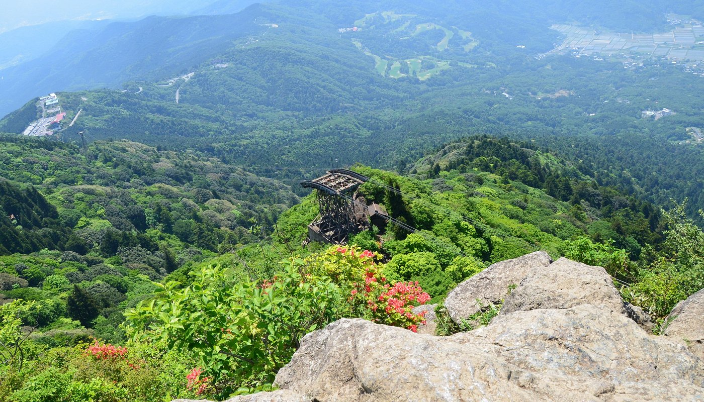
1. เขาทซึคุบะ (Mount Tsukuba - 筑波山)
Mt. Tsukuba, Tsukuba City, Ibaraki
ลิงก์ทางการ: Mt. Tsukuba Official Site
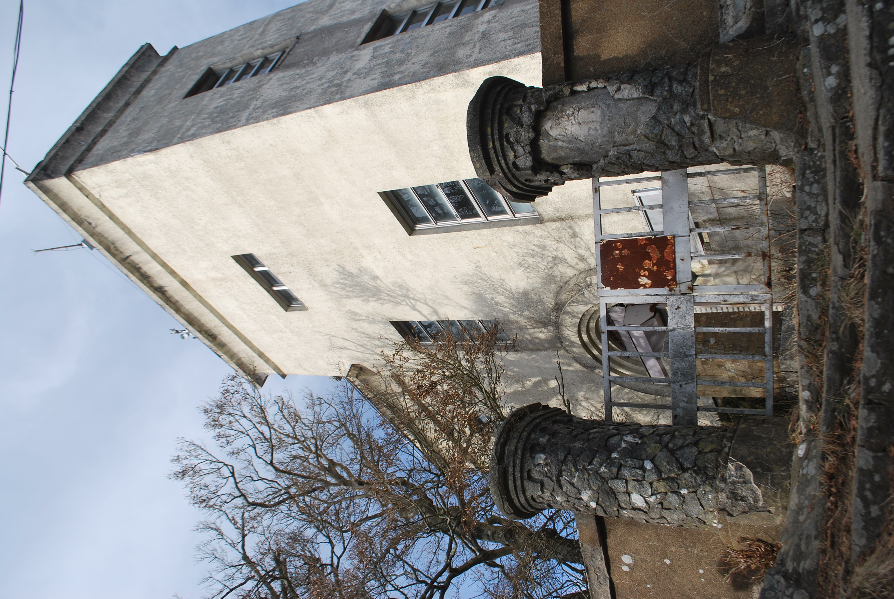
ยอดเขาทซึคุบะ: 1 ใน 100 ภูเขาชื่อดังของญี่ปุ่น (ภาพถ่ายจริง)
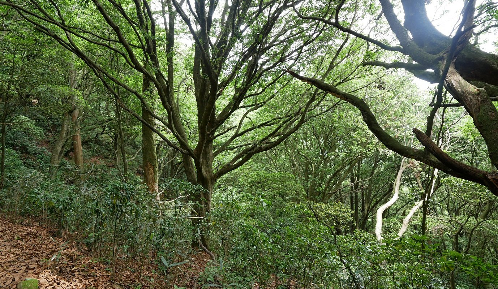
ทัศนียภาพฤดูหนาวเหนือที่ราบคันโต (Kanto Plain)

กระเช้าลอยฟ้า Swiss Ropeway สู่ยอดเขานิโยว์ไท
🗺️ แผนที่เส้นทางสำรวจภูเขา (Mount Tsukuba Exploration Trails)
Miyukigahara Course (御幸ヶ原コース)
ระยะทาง 2.1 km | ความชันปานกลาง-ชัน | จากศาลเจ้า Tsukuba Shrine -> ยอดเขานันไท (Mt. Nantai)
เส้นทางเดินผ่านป่าสนโบราณอุดมสมบูรณ์ ตลอดทางมีร่มเงาไม้หนาแน่น เหมาะสำหรับผู้ที่ต้องการเดินออกกำลังกายชมธรรมชาติ
Shirakumobashi Course (白雲橋コース)
ระยะทาง 2.8 km | ผ่านโขดหินศักดิ์สิทธิ์ | จากศาลเจ้า Tsukuba Shrine -> ยอดเขานิโยว์ไท (Mt. Nyotai)
เส้นทางไฮไลท์ที่ผ่านโขดหินรูปทรงแปลกตาในตำนาน เช่น โขดหิน Daibutsu-iwa (หินพระพุทธรูป) และโขดหินแห่งศรัทธา
Summit Ridge Link Trail (山頂連絡路)
ระยะทาง 1.0 km | สันเขาเชื่อม 2 ยอด | ระหว่าง Mt. Nantai <-> Mt. Nyotai
เส้นทางเดินสบายๆ บนสันเขาสูง 870+ เมตร เชื่อมต่อระหว่าง 2 ยอดเขาแฝด ผ่านลานกิจกรรม ร้านค้า และจุดชมวิวพาโนรามา
Cable Car & Ropeway (กระเช้าไฟฟ้า Swiss-made)
ใช้เวลาเพียง 6-8 นาที | ไม่ต้องเดินเหนื่อย | ทัศนียภาพ 360 องศา
นั่งกระเช้า Cable Car จากสถานี Miyawaki (8 นาที) หรือ Ropeway จากสถานี Tsutsujigaoka (6 นาที) ขึ้นสู่ยอดเขาได้อย่างสะดวกสบายและปลอดภัย
กระเช้า Cable Car (สถานี Miyawaki -> ยอดเขานันไท)
- เวลาทำการ: 9:00 - 16:30 น. (ออกทุก 20 นาที)
- ค่าโดยสาร: เที่ยวเดียว 590 เยน / ไป-กลับ 1,070 เยน (ผู้ใหญ่)
กระเช้า Ropeway (สถานี Tsutsujigaoka -> ยอดเขานิโยว์ไท)
- เวลาทำการ: 9:00 - 17:00 น. (มีรอบค่ำ Starlight Cruise 17:00-20:00 น. วันเสาร์-อาทิตย์)
- ค่าโดยสาร: เที่ยวเดียว 630 เยน / ไป-กลับ 1,120 เยน (ผู้ใหญ่)
ยอดเขาแฝด & สัญลักษณ์แห่งความรักสมรส
เขาทซึคุบะประกอบด้วย 2 ยอดเขาแฝดอันเป็นเอกลักษณ์ คือ ยอดเขานิโยว์ไท (Mt. Nyotai - 877m) และ ยอดเขานันไท (Mt. Nantai - 871m) ซึ่งเป็นสัญลักษณ์ตัวแทนของเทพเจ้าหญิงและเทพเจ้าชายตามความเชื่อชินโต เชื่อกันว่าจะประทานพรความรัก ความสามัคคี และความสุขในชีวิตสมรสสำหรับคู่รักและครอบครัว
อาหารท้องถิ่นบนยอดเขา (Mountain Soba / Udon)
บริเวณลานกิจกรรมและจุดชมวิวระหว่างยอดเขามีร้านอาหารและร้านของที่ระลึก เสิร์ฟ โซบะ/อุด้งภูเขาร้อนๆ (Mountain Soba & Udon) และชาอุ่นๆ ให้คุณแก้วและน้องเติมเต็มได้นั่งทานเติมพลังคลายหนาวพร้อมชมวิว 360 องศาพาโนรามา
☕ ร้านกาแฟยอดเขา: 877Stand (สาขายอดเขาทซึคุบะ 877m)
Summit Cafe Experience1 Tsukuba, Tsukuba City, Ibaraki (ตั้งอยู่บริเวณพื้นที่ลานยอดเขาทซึคุบะ)
- คาเฟ่สุดชิคบรรยากาศระดับเมืองหลวง: คาเฟ่คุณภาพเยี่ยมบนยอดเขาสูง 877 เมตร เสิร์ฟกาแฟสดหอมกรุ่นพร้อมวิวทิวทัศน์ 360 องศาเหนือที่ราบคันโต (Kanto Plain) มองเห็นเส้นขอบฟ้าโตเกียว และเงาภูเขาไฟฟูจิในวันที่ฟ้าโปร่ง
- วิวิบาริสต้า & Custom Latte Art: หากเดินทางไปช่วงคนไม่แน่น บาริสต้าประจำร้านจะตั้งใจวาดลวดลาย Latte Art สวยงามตระการตาบนถ้วยกาแฟสด
- เข้าถึงได้ทุกคน ไม่ต้องปีนเหนื่อย: นั่งกระเช้า Swiss-made Cable Car หรือ Ropeway ขึ้นมาถึงยอดเขา แล้วเดินตรงเข้าจิบกาแฟชมวิวได้ทันที เหมาะสำหรับคุณแก้วและครอบครัว
รีวิวจาก Trip Moment (SeWe & lnmeei.days): "เขาทซึคุบะ มอบความสมดุลระหว่างธรรมชาติ วัฒนธรรมชินโต และวิวทิวทัศน์ 360 องศาอันน่าประทับใจ ร้านกาแฟ 877Stand บนยอดเขาเสิร์ฟกาแฟสดและลาเต้อาร์ตพร้อมบรรยากาศสุดฟิน!" (คะแนนเต็ม 4.8/5 ดาว)
การเดินทางจาก Tsukuba Station:
นั่งรถบัสสาย "Mt. Tsukuba Shuttle Bus" จาก Tsukuba Center ชานชาลา 1 ไปลงป้าย Tsukubasan Shrine (36 นาที 730 เยน) หรือป้าย Tsutsujigaoka (50 นาที 940 เยน)

2. Tsukuba Center Building (つくばセンタービル)
Azuma 1-chome, Tsukuba-shi, Ibaraki (ติดสถานี Tsukuba Station ทางออก A3/A4)
ออกแบบโดย: Arata Isozaki (磯崎新) (สถาปนิกรางวัล Pritzker Architecture Prize ปี 2019)

Tsukuba Center Building: ผลงานระดับมาสเตอร์พีซสถาปัตยกรรม Postmodern (ภาพถ่ายจริง)
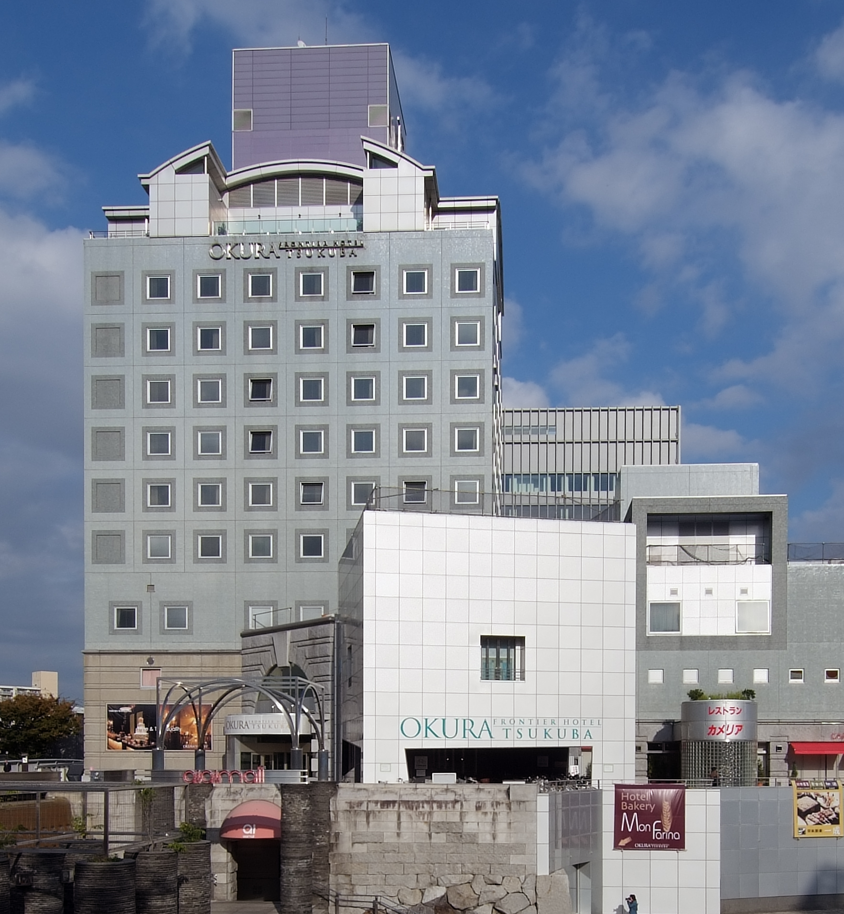
Sunken Plaza (Inverted Forum): ลานรูปไข่กลางอาคาร แรงบันดาลใจจาก Piazza del Campidoglio โรม
ประวัติ & แนวคิดการออกแบบ
- ปีที่ก่อสร้าง: 1979 - 1983 (งานชิ้นเอกยุค Postmodern)
- แนวคิด Sunken Plaza (ลานรูปไข่กลางอาคาร): ถอดแบบรูปทรงจาก Piazza del Campidoglio ในกรุงโรม แต่เปลี่ยนเป็นหลุมยุบกลางดิน (Inverted Forum) เพื่อสะท้อนความถ่อมตนของเมืองวิทยาศาสตร์
- วัสดุและลวดลาย: การผสมผสานลวดลายหินแกรนิต คอนกรีตขัด และรูปทรงเรขาคณิตซับซ้อน
องค์ประกอบภายในคอมเพล็กซ์
- Nova Hall (ノバホール): ฮอลล์แสดงคอนเสิร์ตและอคูสติกการแสดงดนตรีชั้นนำ
- Hotel Okura Tsukuba: โรงแรมและศูนย์ประชุมระดับพรีเมียม
- Aiai Mall & Pedestrian Deck: ศูนย์การค้าและสะพานเดินลอยฟ้าเชื่อมต่อทั่วเมืองโดยไม่มีรถยนต์ตัดผ่าน
จุดถ่ายรูปแนะนำสำหรับคุณ Bank & ครอบครัว: ลาน Sunken Plaza กลางอาคาร และสะพาน Pedestrian Deck วิวอาคารโค้งสไตล์ Postmodern สะท้อนแสงแดดฤดูหนาว
3. พิพิธภัณฑ์ศิลปะทซึคุบะ (茨城県つくば美術館 - Tsukuba Museum of Art)
2-8 Azuma, Tsukuba-shi, Ibaraki 305-0031 (ตั้งอยู่ในอาคาร Tsukuba Cultural Center ARS เดิน 5 นาทีจาก Tsukuba Station)
โทร: 029-856-3711 | อีเมล: info@tsukuba.museum.ibk.ed.jp
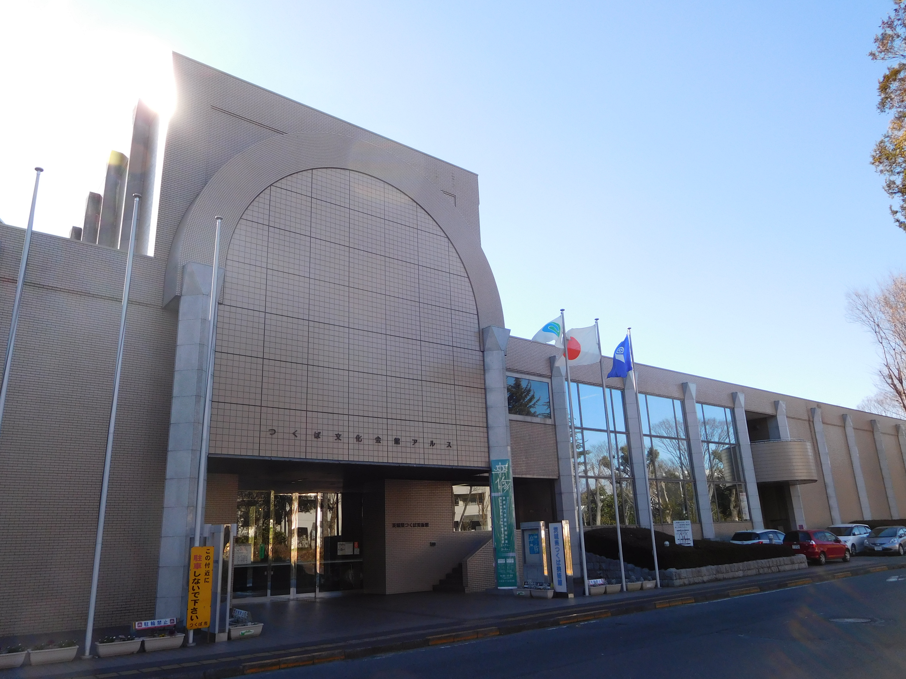
ตัวอาคารสถาปัตยกรรม Tsukuba Cultural Center ARS (พิพิธภัณฑ์ศิลปะทซึคุบะ - ภาพถ่ายจริง)
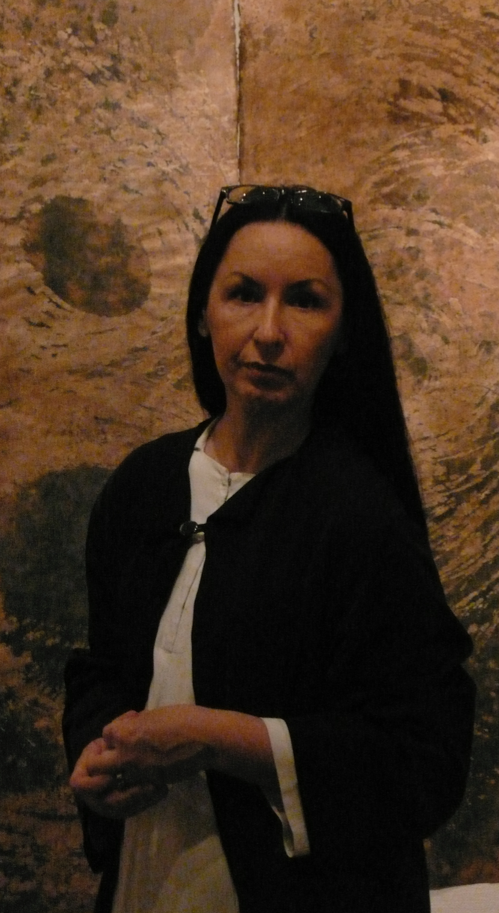
ห้องโถงจัดแสดงนิทรรศการศิลปะและกิจกรรมการเรียนรู้สำหรับเด็กและครอบครัว (ภาพถ่ายจริง)
เวลาทำการ & การเข้าชม
- เวลาทำการ: 9:30 - 17:00 น. (เปิดให้เข้าชมถึง 16:30 น. / วันสุดท้ายของนิทรรศการมักปิด 15:00 น.)
- วันปิดทำการ: ทุกวันจันทร์ (หากตรงกับวันหยุดนักขัตฤกษ์จะเปิดทำการ) และช่วงปีใหม่
- อัตราค่าเข้าชม: เข้าชมฟรีสำหรับนิทรรศการทั่วไป (นิทรรศการพิเศษบางงานมีค่าเข้าชมตามกำหนด)
แนวคิดพิพิธภัณฑ์ (Seeing, Creating, Presenting)
พิพิธภัณฑ์ศิลปะประจำจังหวัดอิบารากิ เน้นเป็นพื้นที่แสดงผลงานศิลปะร่วมสมัย ภาพเขียน จิตรกรรม ประติมากรรม งานฝีมือ หัตถกรรม และภาพถ่าย พร้อมพื้นที่ส่งเสริมการเรียนรู้สำหรับเด็กและครอบครัว
5 กิจกรรมสร้างสรรค์ & พื้นที่สำหรับเด็ก (Educational Programs)
1. つく美でつくり場 (Tsukubi Tsukuriba)
พื้นที่สร้างสรรค์งานศิลปะอิสระสำหรับเด็กและครอบครัว (อังคาร-ศุกร์ 14:30-16:30 น. / อาทิตย์ & นักขัตฤกษ์ 9:30-11:30 น.)
2. とびだす！カード作り (Pop-up Card Workshop)
เวิร์กชอปทำป๊อปอัปการ์ด 3 มิติสำหรับเด็ก ตามธีมประจำเดือน (เช่น ธีมชมจันทร์ お月見 หรือธีมฤดูกาล) ฟรีไม่มีค่าใช้จ่าย
3. 美術図書ライブラリー (Art Library)
ห้องหนังสือและภาพนิทานศิลปะสำหรับเด็กและผู้ใหญ่ นั่งอ่านพักผ่อนในบรรยากาศสงบเงียบ
4. 土曜講座 (Saturday Art Lectures)
การบรรยายและนำชมผลงานศิลปะโดยภัณฑารักษ์ผู้เชี่ยวชาญ (จัดทุกวันเสาร์เวลา 13:30 น.)
5. ビデオ鑑賞会 (Art Video Screenings)
ฉายภาพยนตร์และสารคดีศิลปินระดับโลก (เช่น Millet, Vermeer) สำหรับผู้หลงใหลในงานศิลปะ
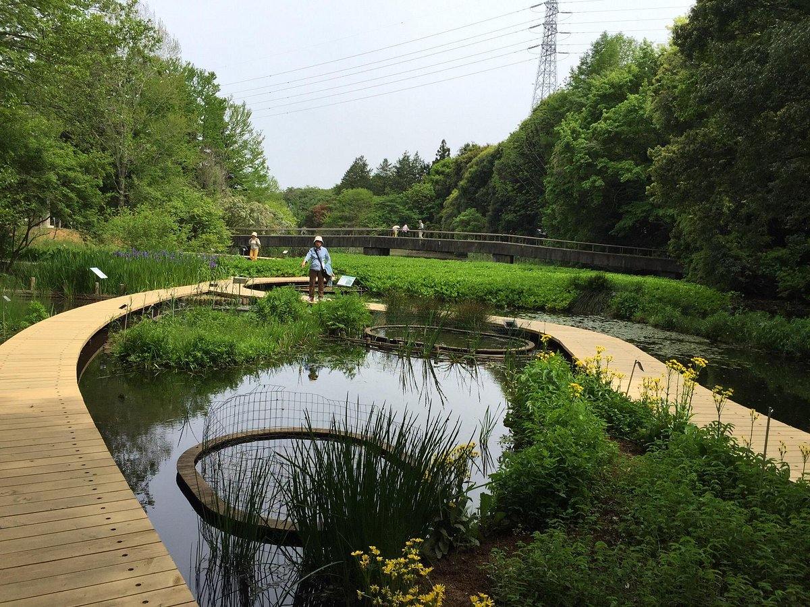
4. Tsukuba Botanical Garden (สวนพฤกษศาสตร์ Tsukuba)
4-1-1 Amakubo, Tsukuba-shi, Ibaraki 305-0005 (ดูแลโดย National Museum of Nature and Science)
ลิงก์ทางการ: Tsukuba Botanical Garden Official
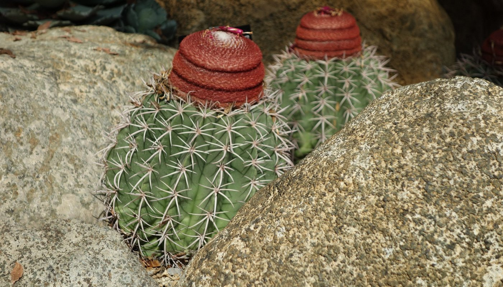
โดมเรือนกระจกพืชเขตร้อน & อบอุ่น: ปลอดลมหนาว เดินชมสบายๆ สำหรับคุณแก้ว (ภาพถ่าย Tripadvisor)
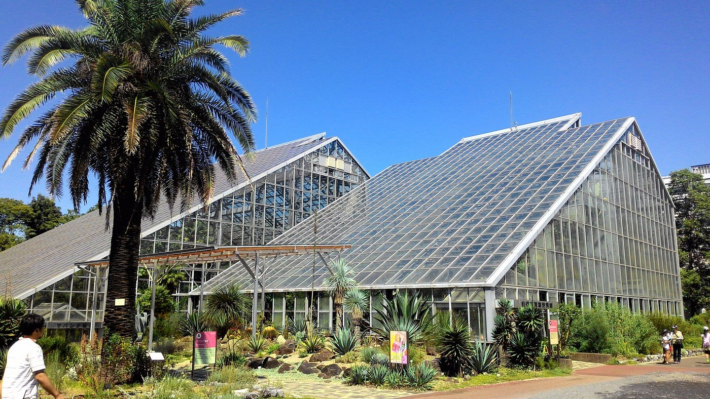
พื้นที่กว้างขวาง ร่มรื่น และมีป้ายอธิบายพันธุ์ไม้ทุกต้น (ภาพถ่าย Tripadvisor)
เวลาทำการ & วันหยุด
- เวลาทำการ: 9:00 - 16:30 น. (เข้าชมรอบสุดท้าย 16:00 น.)
- วันปิดทำการ: ทุกวันจันทร์ (ปิดทำการช่วงปีใหม่ 28 ธ.ค. - 4 ม.ค.)
- สถานะวันที่ 24-27 ธ.ค. เปิดทำการปกติทุกวัน
ค่าเข้าชม & จุดเด่น
- ค่าเข้าชม: ผู้ใหญ่ 320 เยน / เด็กและผู้สูงอายุ ฟรี
- จุดเด่น: เป็นสวนพฤกษศาสตร์วิจัยของพิพิธภัณฑ์ธรรมชาติวิทยาแห่งชาติ มีโดมเรือนกระจกควบคุมอุณหภูมิหลายหลัง ช่วยให้เดินชมพืชพรรณได้อบอุ่น ไม่หนาวสั่นในฤดูหนาว
5. สวนสาธารณะโดโฮ (Doho Park - 洞峰公園)
2-20 Ninomiya, Tsukuba-shi, Ibaraki
เวลาทำการ: เปิดบริการ 24 ชั่วโมง ทุกวันตลอดปี (เข้าชมฟรี Free Entry)
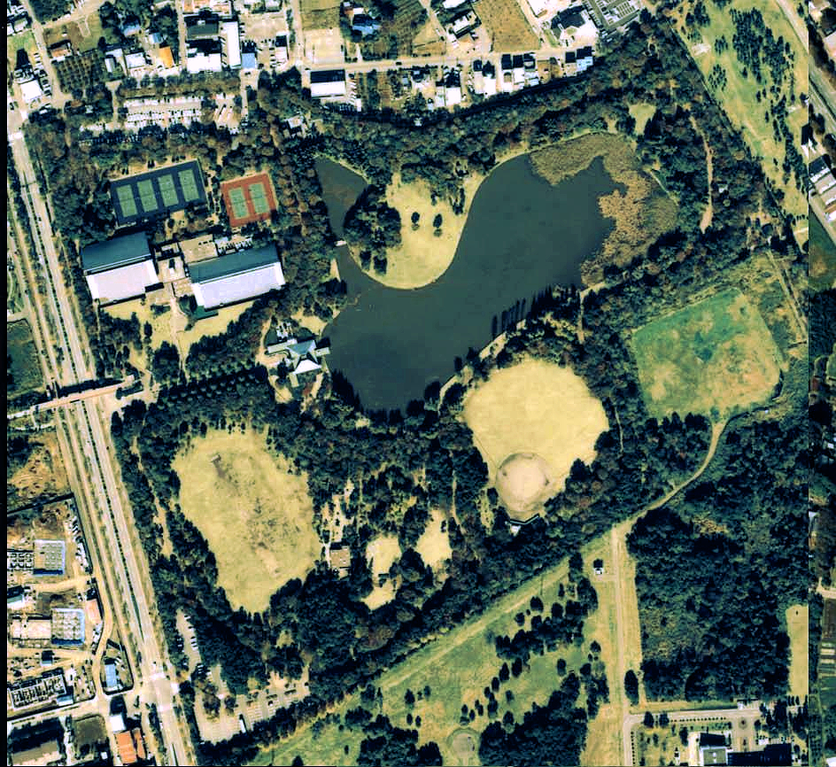
Doho Park: ทะเลสาบขนาดใหญ่ใจกลางสวนและเส้นทางเดินป่า (ภาพถ่ายจริง)
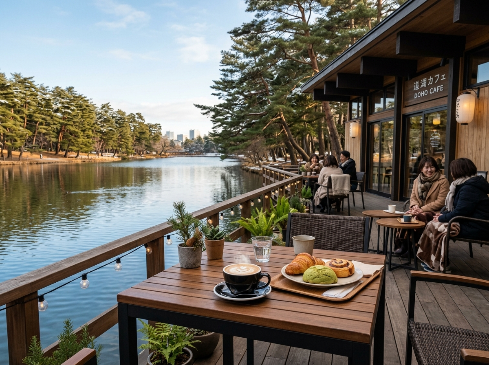
Doho Cafe: คาเฟ่ริมน้ำบรรยากาศชิลล์ จิบกาแฟสดร้อนๆ ชมวิวสระน้ำและทิวทัศน์สนฤดูหนาว
จุดเด่น & กิจกรรมพักผ่อนสำหรับครอบครัว
- ทะเลสาบขนาดใหญ่ & เส้นทางเดินชมธรรมชาติ: โอบล้อมด้วยธรรมชาติเขียวขจี มีเส้นทางเดินป่าและเดินออกกำลังกายรอบทะเลสาบที่ได้รับการดูแลอย่างเรียบร้อย สะอาด ปลอดภัย
- ☕ คาเฟ่ริมทะเลสาบ (Lakeside Cafe): ร้านกาแฟบรรยากาศอบอุ่นสไตล์มินิมอลริมน้ำ เสิร์ฟเครื่องดื่มร้อน เบเกอรี่ และขนมหวาน พร้อมวิวทิวทัศน์ริมสระน้ำ สำหรับนั่งจิบกาแฟพักผ่อนรับลมหนาวชิลล์ๆ ไม่เร่งรีบสำหรับคุณแก้ว
- พื้นที่กิจกรรมครอบครัว: มีสนามเด็กเล่น ลานกีฬา และสนามหญ้ากว้างขวาง เหมาะอย่างยิ่งสำหรับการมาเดินเล่นพักผ่อนกับน้องเติมเต็ม
รีวิวจากผู้เชี่ยวชาญ Trip.com: "สวนสาธารณะ Doho เป็นสถานที่พักผ่อนหย่อนใจที่สวยงามในเมืองสึคุบะ มีทะเลสาบขนาดใหญ่ที่รายล้อมด้วยต้นไม้ มีเส้นทางเดินรอบทะเลสาบและร้านกาแฟริมน้ำวิวสวยงาม" (คะแนนเต็ม 5.0/5 ดาว)